-
Панкейки на молоке к завтракуингредиенты:
1) яйца 1 шт. 2) мука 1,5 стак. 3) молоко 1 стак. 4) масло растительное 2 ст.л. 5) сахар 2 ст.л. 6) сода 1/2 ч.л. 7) соль 1 щепотка
КАК ПРИГОТОВИТЬ
Шаг - 1. В мисочке перемешать сухие ингредиенты - соль, сахарный песок, пищевую соду, пшеничную муку. Взбить с помощью миксера сырое куриное яйцо с молоком и рафинированным растительным маслом. Взбить ингредиенты в пышную пену на больших оборотах. Масса должна значительно увеличиться в объеме.
Шаг - 2. Соединить сухую смесь с молочной также при помощи миксера. Сухую сковороду разогреть, налить тесто столовой ложкой, печь до появления пузырей. Перевернуть панкейки на молоке деревянной лопаткой, жарить с другой стороны до готовности.
-
Оладьи на кефире к завтракуингредиенты:
1) кефир 500 мл 2) яйца 3 шт. 3) мука 2 стакана 4) масло растительное 3-4 ст.л. 5) сахар 1 ст.л. 6) соль 1/2 ч.л. 7) сода 1/4 ч.л.
КАК ПРИГОТОВИТЬ
Шаг - 1. В мисочке перемешать сухие Соединить яйца, сахар, соль, налить половину кефира, непрерывно помешивая, медленно насыпать муку. Замесить тесто. Налить остальной кефир, тщательно размешать и добавить соду. С помощью большой ложки выложить на сковороду тесто маленькими порциями. Готовить оладьи на кефире с двух сторон до образования корочки.
-
Блинчики на молоке к завтракуингредиенты:
1) молоко 1 л 2) мука 300 г 3) масло сливочное 50 г 4) яйца 5 шт. 5) сахар 4 ст.л. 6) масло растительное 2 ст.л. 7) соль 1/2 ч.л. 8) сахар ванильный 1/2 пакетика
КАК ПРИГОТОВИТЬ
Шаг - 1. Чтобы тесто для блинов получилось идеальным, можно использовать для смешивания продуктов комбайн или миксер. Так все ингредиенты отлично перемешаются, комочков не будет, и блинчики получатся более нежными. Взбить яйца с сахаром в пену, затем добавить ванилин и соль.
Шаг - 2. Влить теплое молоко. Всыпать просеянную муку до консистенции теста жидкой сметаны. В последнюю очередь влить растительное масло. Сковороду раскалить и налить в нее 2 ложки растительного масла. Масло нагреется быстро, но необходимо подождать еще пару минут, когда оно начнет кипеть на сковороде, так блины не пристанут, а первый блин не будет комом.
Шаг - 3. Половником набрать тесто и вылить на сковороду, равномерно распределяя по всей поверхности, переворачивая сковороду в разные стороны. Выпекать блин с двух сторон до румяной корочки, переворачивать при помощи лопатки. Горячие блинчики на молоке смазать сливочным маслом, для сладости присыпать сахаром.
-
Шоколадные пирожные в духовкеингредиенты:
1) яйца 2 шт. 2) молоко 1 стакан 3) сахар 1 стакан 4) мука 1 стакан 5) масло растительное 1/2 стакана 6) какао-порошок 5 ст.л. 7) разрыхлитель 1 ст.л. 8) ванилин 1 щепотка
КАК ПРИГОТОВИТЬ
Шаг - 1. С помощью миксера взбить молоко с растительным маслом, сахаром и какао-порошком. Половину полученной смеси перелить в отдельную емкость. Вбить сырые куриные яйца, муку, просеянную вместе с разрыхлителем, всыпать ванилин из пакетика. Массу взбить миксером.
Шаг - 2. Тесто вылить на заранее смазанный маслом противень. Время приготовления в духовке – полчаса, температура – 175 градусов. Готовый корж вынуть, немного остудить и полить оставшейся шоколадной смесью. Остудить шоколадные пирожные окончательно и подать к столу.
-
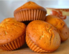Манные кексы на кефире к чаюингредиенты:
1) манная крупа 1 стакан 2) кефир 1 стакан 3) мука 1 стакан 4) сахар 1 стакан 5) яйца 1 шт. 6) сода ½ ч.л.
КАК ПРИГОТОВИТЬ
Шаг - 1. Залить манку кефиром, оставить на 40 минут.
Шаг - 2. Разбить яйцо, перемешать, влить соду, гашенную уксусом, сахар и муку. Смесь вымешать блендером, разлить по формочкам, заполнив их на 2\3.
Шаг - 3. Выпекать манные кексы около 50 минут в заранее прогретой до 200 градусов духовке.
-
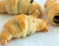Круассаны с шоколадой начинкойингредиенты:
1) тесто слоеное 500 г 2) шоколадная крошка 115 г 3) яйца 1 шт. 4) вода 1 ст.л.
КАК ПРИГОТОВИТЬ
Шаг - 1. Достать тесто из морозилки за 40 минут до приготовления, прогреть духовку до 175 градусов.
Шаг - 2. Разрезать размороженное тесто на 8 прямоугольников, а потом каждый на 2 треугольника. Положить шоколадную начинку на широкий край, свернуть в рогалик.
Шаг - 3. Переложить быстрые круассаны с шоколадной начинкой на противень, смазать верх яйцом, взбитым с небольшим количеством воды, выпекать 25 минут до золотистого цвета.
-
Бутерброды в духовке к завтракуингредиенты:
1) хлеб тостовый 16 кусков 2) ветчина 8 кусков 3) грибы 200 г 4) сыр твердый 100-150 г 5) яйца 4 шт. 6) помидоры 1-2 шт. 7) масло сливочное 1 ст.л. 8) перец черный молотый 9) петрушка 10) соль
КАК ПРИГОТОВИТЬ
Шаг - 1. Почистить небольшие шампиньоны, порезать, обжарить до готовности, приправить перцем и солью, добавить чуть молотой гвоздики, перемешать. Из половины кусочков хлеба сделать рамочки, мякоть отложить. Разложить на противне целые кусочки, на них положить рамочки. Половину рамочек заполнить грибами, на них уложить по кусочку помидора, присыпать сырной стружкой.
Шаг - 2.На оставшихся кусочках поднять рамочку и положить по пластинке ветчины, опустить рамку, накрыть кружками помидора, вбить по яйцу. Задвинуть противень с 8 необычными бутербродами в уже прогретую до 180 градусов духовку, держать до расплавления сыра и схватывания белка, сразу подавать к столу.
-
Бутерброды с колбасой и сыром в микроволновкеингредиенты:
1) булка пшеничная (Любую булку можно использовать) 3 шт. 2) колбаса 100 г 3) сыр 100 по вкусу 4) масло сливочное 30 г
КАК ПРИГОТОВИТЬ
Шаг - 1. Для начала нам надо намазать масло на булку, чтобы наш бутерброд не был рассыпчатым.
Шаг - 2. После нарежьте колбасу небольшими кубиками. Положите эти кубики на нашу булку с маслом.
Шаг - 3. После натрите сыр на мелкой терке. И посыпьте сыр на наш будущий бутерброд.
Шаг - 4. Осталось только отправить бутерброд в микроволновку на 40 секунд. Наш горячий бутерброд готов. Приятного аппетита.
-
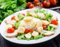Классический салат «Цезарь»ингредиенты:
1) сыр твердый 200 г 2) сухари 100 г 3) помидоры черри 2-3 шт. 4) куриное филе 1 шт. 5) пекинская капуста 3-4 листа 6) ДЛЯ СОУСА: 7) лимон 1 шт. 8) чеснок 3 зубчика 9) майонез 10) зелень
КАК ПРИГОТОВИТЬ
Шаг - 1. Приготовить курицу. По желанию: можно просто ее отварить, а можно отварить, а потом немного обжарить. Кому, как нравится. Пока мясо находится в процессе готовки, порезать капусту на тоненькие полоски. Порезать дольками помидоры. Мелко потереть сыр.
Шаг - 2. Когда курица будет готова, разобрать мясо на маленькие кусочки (волокна). Приготовить соус: измельчить в блендере чеснок с майонезом, зеленью и двумя капельками лимонного сока до однородности. Чеснок и лимон класть по вкусу. Данную процедуру можно сделать вручную.
Шаг - 3. Салат «Цезарь» не заправлять, соус подавать отдельно. Каждый должен сам налить его себе в тарелку. Даже если застолье затянется, салатик сохранит привлекательный внешний вид и великолепный вкус.
-
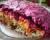Классическая сельдь под шубойингредиенты:
1) филе сельди 300 г 2) картофель 300 г 3) морковь 300 г 4) свекла 300 г 5) майонез 200 г 6) лук репчатый 150 г 7) соль
КАК ПРИГОТОВИТЬ
Шаг - 1. Морковь, картофель и свеклу отварить до полной готовности.
Шаг - 2. Все овощи остудить и очистить.
Шаг - 3. Репчатый лук измельчить.
Шаг - 4. Селедочное филе нарезать небольшими кусочками. Внимательно отнестись к наличию костей, их нужно аккуратно удалить. Овощи натереть на терке с мелкими ячейками.
Шаг - 5. Выложить на блюдо первый слой картофеля и смазать майонезом, который можно приготовить самостоятельно.
Шаг - 6. Выложить сельдь, еще раз смазать майонезом.
Шаг - 7. Следующие слои – лук, майонез, морковь, майонез, свекла. Верх сельди под шубой украсить узорами из того же майонеза, посыпать зеленью.
-
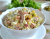Салат «Оливье» классическийингредиенты:
1) Вареная колбаса (ветчина) 200-250 г 2) Морковь 1 шт. 3) Картофель 3-4 шт. 4) Зеленый горошек 1 банка 5) Огурцы соленые (маринованные корнишоны) 3-4 шт. 6) Лук 1 шт.(средняя луковица) 7) Вареное яйцо 3-4 шт. 8) Соль, черный молотый перец 9) Майонез 100-150 г
КАК ПРИГОТОВИТЬ
Шаг - 1. Овощи тщательно промыть и отварить на слабом огне с добавлением соли (0,5 ч.л.) до мягкости, но, не разваривая, остудить, снять кожицу и нарезать небольшими кубиками. Огурцы нарезать мелкими кубиками. Яйца опустить в кипящую воду и варить 8 минут с момента закипания, поместить в емкость с холодной водой, очистить и размять вилкой. Колбасу порезать небольшими кубиками. Вскрыть банку с зеленым горошком, аккуратно слить жидкость. Лук очистить, измельчить, желательно на 2-3 минуты поместить в емкость со слабым раствором уксуса, чтобы ушла горечь. Все ингредиенты смешать в глубокой посуде, чуть-чуть посолить, поперчить молотым черным перцем и заправить майонезом. Готовый салат выложить в глубокий салатник и украсить свежей зелень. Перед подачей к столу, дать «Оливье» настояться в прохладном месте 30-40 минут. Оригинальный вариант подачи к столу салата «Оливье»: Ополоснуть стакан холодной водой, плотно наполнить его охлажденным салатом, перевернуть стакан с салатом на плоскую тарелку и аккуратно его снять. Ровную верхнюю поверхность украсить свежей зеленью. Такой вариант идеально подходит для порционной подачи каждому гостю.
-
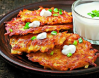Картофельные драники с лукомингредиенты:
1) картофель 1 кг 2) масло растительное 100 мл 3) лук репчатый 1 головка 4) соль 1 ч.л. 5) перец черный молотый 1/2 ч.л.
КАК ПРИГОТОВИТЬ
Шаг - 1. Клубни картофеля очистить и быстро натереть, мякоть не должна успеть потемнеть. Репчатый лук также натереть или измельчить с помощью блендера, добавить в картошку. Излишки жидкости слить. Массу посолить и поперчить по вкусу. Разогреть на сковороде растительное масло, выложить тесто ложкой. Жарить картофельные драники на среднем огне с двух сторон до золотисто-коричневой корочки.
-
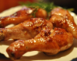Куриные ножки в горчично-медовом маринаде в духовкеингредиенты:
1) куриные ножки 8 шт. 2) мед жидкий 100 мл 3) горчица дижонская 4 ст.л. 4) уксус винный белый (лимонный сок) 4 ст.л. 5) масло подсолнечное 2 ст.л. 6) чеснок 2 зубчика 7) соль по вкусу 8) соус соевый по вкусу 9) перец черный свежемолотый по вкусу 10) петрушка по вкусу 11) кинза по вкусу
КАК ПРИГОТОВИТЬ
Шаг - 1. В ножках сделать проколы острием ножа, сложить в глубокую миску.
Шаг - 2. Смешать жидкий мед, дижонскую горчицу, белый винный уксус, чеснок, подсолнечное масло, соль, соевый соус, свежемолотый черный перец, промазать курицу, закрыть фольгой, поставить мариноваться в холодильник на ночь.
Шаг - 3. Прогреть духовку до 220 градусов, переложить ножки в форму, поместить ее на среднюю полку духовки.
Шаг - 4. Запекать куриные ножки в горчично–медовом маринаде около 40 минут, поливая остатками маринада.
Шаг - 5. Готовность блюда проверить ножом. Если выделится прозрачная жидкость, то ножки можно доставать и подавать к столу, присыпав порубленной зеленью.
-
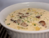Грибной суп с сыром и куриным филеингредиенты:
1) шампиньоны 300 г 2) картофель 300 г 3) сыр плавленый 200 г 4) куриное филе 200 г 5) лук репчатый 150 г 6) масло сливочное 1 ст.л. 7) перец черный молотый 8) соль
КАК ПРИГОТОВИТЬ
Шаг - 1. Куриное филе залить водой, посолить по вкусу, варить 20 минут с момента закипания. Очистить и мелко нарезать репчатый лук, шампиньоны нарезать пластинками, картофель – кубиками. Готовое куриное филе вынуть из бульона, также порезать кубиками. Обжарить накрошенный репчатый лук на разогретом сливочном масле в течение пяти минут, добавить грибы, перемешать и прогревать до выпаривания жидкости, в конце приготовления посолить и поперчить по вкусу.
Шаг - 2. Куриный бульон довести до кипения, положить картофельные кубики, варить 10 – 15 минут. Добавить грибную обжарку, через пять минут – куриное филе, плавленый сырок Дружба, нарезанный кубиками. Перемешать, сыр должен раствориться. Суп можно еще поперчить и посолить. Грибной суп с сыром и куриным филе подать горячим, украсить зеленью укропа, обжаренными грибами.
-
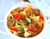Домашний лагман из телятиныингредиенты:
1) бульон мясной 1.5 л 2) телятина 500 г 3) лапша 300 г 4) перец сладкий болгарский 2 шт. 5) помидоры (большие) 2 шт. 6) лук репчатый крупный 1 шт. 7) чеснок 2-3 зубчика 8) масло растительное 3-4 ст.л. 9) перец черный молотый по вкусу 10) соль по вкусу 11) зелень петрушки
КАК ПРИГОТОВИТЬ
Шаг - 1. Порезать мясо на кубики, обжарить порциями в сильно разогретом масле.
Шаг - 2. Овощи порезать на кубики. Сложить все мясо в сковороду, добавить овощи, обжарить минут 7 все вместе.
Шаг - 3. Залить бульоном, дать закипеть, сделать нагрев минимальным, варить примерно час. За 10 минут до готовности добавить мелко нашинкованную петрушку и чеснок.
Шаг - 4. Отварить для вкуснейшего домашнего лагмана из телятины лапшу по инструкции на упаковке, переложить в дуршлаг, дать хорошо стечь.
Шаг - 5. Разложить по тарелкам лапшу, добавить овощи с мясом и бульоном, посыпать зеленью.
-
Тарталетки с крабовым мясом и сыромингредиенты:
1) сыр твердый 100 г 2) крабовые палочки 2 шт. 3) яйца 2 шт. 4) майонез 1 ст.л. 5) перец черный молотый 6) тарталетки 7) соль
КАК ПРИГОТОВИТЬ
Шаг - 1. Яйца отварить и порезать мелкими кубиками. Крабовые палочки или крабовое мясо нарезать такими же кубиками. Сыр натереть на крупной терке. Заправить майонезом, поперчить, посолить по вкусу. Наполнить тарталетки салатом и украсить веточкой свежей зелени. Тарталетки с крабовым мясом и сыром выложить на блюдо и подать к праздничному столу.
-
Закусочные рулетики из блинов с лососемингредиенты:
ДЛЯ БЛИНОВ: 1) молоко 200 мл 2) мука 150 г 3) яйца 2 шт. 4) масло растительное 1-2 ст.л. 5) сахар 1 ст.л. 6) разрыхлитель 1/2 ч.л. 7) соль 1 щепотка ДЛЯ НАЧИНКИ: 1) лосось слабосоленый 200-250 г 2) сыр сливочный 150 г 3) укроп
КАК ПРИГОТОВИТЬ
Шаг - 1. В ножках сделать проколы острием ножа, сложить в глубокую миску.
Шаг - 2. Взбить подсоленные яйца с сахаром, влить чуть подогретое молоко, всыпать порциями муку в смеси с разрыхлителем, добавить масло, перемешать до образования однородного теста, разогреть сковороду, испечь блинчики (7-8 шт.), дать им остыть.
Шаг - 3. Нарезать лосось на тонкие полосы, смазать блин сыром, уложить на него рыбу, свернуть в рулет, убрать их в холодильник на треть часа. Затем, чтобы получились рулетики из блинов с лососем, нарезать свернутые блины на кусочки.
-
Творожно-банановый чизкейк без сахараингредиенты:
1) творог 0% 500 г 2) бананы 400 г 3) йогурт/сметана 100 г 4) мука 50 г 5) сахарная пудра 20 г 6) яйца 2 шт. 7) клубника
КАК ПРИГОТОВИТЬ
Шаг - 1. Мягкий творог с низким процентом жирности или обезжиренный смешать со сметаной или йогуртом, взбить с сахарной пудрой. Добавить сырые куриные яйца, снова взбить.
Шаг - 2. Всыпать пшеничную муку, перемешать. Отдельно приготовить банановое пюре, вмешать в основную смесь, все взбить. Печь массу в разогретой до 160 градусов духовке в течение часа.
Шаг - 3. Можно готовить чизкейк на водяной бане. Готовый десерт остудить, по возможности отставить на ночь. Остывший творожно-банановый чизкейк украсить клубникой и посыпать сахарной пудрой.
-
Сливочная панна-котта с шоколадом и сгущенкойингредиенты:
1) сливки 250 мл 2) молоко 150 мл 3) шоколад черный горький 100 г 4) желатин 15 г 5) молоко сгущенное 4 ст.л.
КАК ПРИГОТОВИТЬ
Шаг - 1. Пластинки желатина залить сливками с добавлением молока, дать постоять минут 10 и разбухнуть, прогреть, помешивая до полного его растворения, разлить по 2 стаканам, но не поровну, в один больше, чем в другой.
Шаг - 2. Мелко поломать шоколад, перемешать с меньшей частью желатинового раствора до полного его растворения.
Шаг - 3. Большую смешать со сгущенкой, разлить по широким стаканам, заполнить чуть менее, чем на половину, поставить на треть часа застывать в холодильник, для получения более декоративного вида панна-котты с шоколадом и сгущенкой, стакан можно зафиксировать в слегка наклонном положении.
Шаг - 4. После схватывания молочной смеси, уложить поверх нее шоколадную, дать еще раз застыть в наклонном положении и украсить шоколадной стружкой.
-
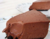Диетический шоколадный чизкейк с творогомингредиенты:
1) творог обезжиренный 400 г 2) молоко 1% 100 г 3) какао-порошок 50 г 4) мед 20 г 5) желатин 15 г
КАК ПРИГОТОВИТЬ
Шаг - 1. Замочить желатин в воде, чтобы он набух. Затем слить воду, а желатин развести с теплым молоком, добавить творог, мед и какао-порошок. Ингредиенты взбить блендером или миксером в пышную однородную массу.
Шаг - 2. Разлить в подготовленные формочки и поставить в холодильник до полного остывания. Украсить диетический шоколадный чизкейк веточкой мяты или долькой апельсина.
-
Легкий бланманже с фруктамиингредиенты:
1) творог обезжиренный 700 г 2) сметана 10% 250 г 3) молоко 200 мл 4) сахар 200 г 5) желатин 30 г 6) фрукты
КАК ПРИГОТОВИТЬ
Шаг - 1. Залить желатин молоком и отставить минут на 60. Соединить сметану, творог, сахар и взбить миксером до однородности. Мелко нарезать фрукты. Подготовленный желатин нагреть на огне до растворения, но не кипятить. Все ингредиенты смешать в емкости, например, в силиконовой форме. Отправить легкий бланманже с фруктами на 5 часов в холодильник.
-
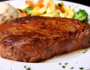Говяжий стейк в кефирном маринаде в мультиваркеингредиенты:
1) говяжий стейк 2 шт. 2) кефир 120 мл 3) итальянские травы 1 ч.л. 4) лавровый лист 5) масло растительное 6) перец черный молотый 7) соль
КАК ПРИГОТОВИТЬ
Шаг - 1.
Мясо немного отбить кухонным молотком.
Шаг - 2.Кефир перемешать со смесью итальянских трав, добавить перец и соль.
Шаг - 3.На дно емкости выложить лавровый лист.
Шаг - 4.Куски мяса обмазать кефиром со специями, выложить на лавровый лист.
Шаг - 5.Залить остатками кефира, накрыть крышкой.
Шаг - 6.Поставить в холодильник.
Шаг - 7.Пропитавшееся мясо отжать, выложить на решетку.
Шаг - 8.В мультиварку налить растительное масло, раскалить в режиме жарки.
Шаг - 9.Выложить стейки, готовить под крышкой до появления корочки, перевернуть и дожарить с другой стороны.
-
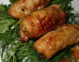Говядина, фаршированная сыром и чеснокомингредиенты:
1) говядина 125 г 2) лук репчатый 25 г 3) сыр 20 г 4) чеснок 14 г 5) зелень по вкусу 6) соль 7) перец черный молотый
КАК ПРИГОТОВИТЬ
Шаг - 1. Куски сырого мяса хорошо отбить. Отдельно измельчить очищенный чеснок, нашинковать лук-репку, натереть сыр.
Шаг - 2. Массу выложить на говядину, соль и молотый перец – по вкусу. Свернуть трубочкой, жарить до готовности на раскаленной сковороде.
-
Натуральный лимонад с мятойингредиенты:
1) вода 2,5 л 2) лимон 2-3 шт. 3) сахар 1/2 стакана 4) мята 1 пучок
КАК ПРИГОТОВИТЬ
Шаг - 1. Отжать сок из лимонов. Вскипятить воду с сахаром, добавить цедру и мяту, варить 5 – 7 минут. Остудить в емкости с холодной водой, дать остыть. Удалить мяту и корочки, сироп процедить, добавить лимонный сок, перемешать домашний лимонад и охладить.
-
Малиново-банановый смузи на молокеингредиенты:
1) малина 150 г 2) молоко 100 г 3) бананы 1 шт. 4) корица молотая
КАК ПРИГОТОВИТЬ
Шаг - 1. Взбить в пюре с помощью блендера свежие или размороженные ягоды малины, очищенные бананы, молоко.
Шаг - 2. Всыпать по вкусу молотую корицу. Налить малиново-банановый смузи в бокалы, посыпать корицей и украсить целыми ягодами малины.
-
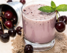Коктейль с ягодами на миндальном молокеингредиенты:
1) миндальное молоко 1 стакан 2) ягоды ¼ стакана 3) геркулес 2 ст.л. 4) мед
КАК ПРИГОТОВИТЬ
Шаг - 1. Смолоть в блендере геркулес в порошок. Добавить остальные продукты, взбить коктейль до однородности.
-
Морковный смузи с бананомингредиенты:
1) морковь 1-2 шт. 2) бананы 1 шт. 3) йогурт натуральный 1 стакан 4) яблочный сок 1 стакан
КАК ПРИГОТОВИТЬ
Шаг - 1. Морковь и банан нарезать кусочками, измельчить в блендере. Добавить сок и йогурт, перемешать. Разлить в стаканы и подать к столу.
-
Пицца с креветками и куриной грудкойингредиенты:
1) тесто дрожжевое 2) сыр твердый 100-150 г 3) куриная грудка 100 г 4) ананасы 100 г 5) креветки 50 г 6) огурцы 1 шт. 7) перец сладкий болгарский ½ шт. 8) томатная паста
КАК ПРИГОТОВИТЬ
Шаг - 1.
Раскатать тесто для пиццы, поместить в смазанную форму.
Шаг - 2.Намазать лепешку томатной пастой.
Шаг - 3.Выложить сладкий болгарский перец, нарезанный соломкой, кусочки свежих ананасов, огурец.
Шаг - 4.Отварить куриную грудку, выложить на овощи, поверх – сырые креветки.
Шаг - 5.Посыпать тертым сыром.
Шаг - 6.Выпечь в духовом шкафу до готовности.
-
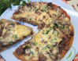Куриные ножки в горчично-медовом маринаде в духовкеингредиенты:
1) картофель 6 шт. 2) яйца 1 шт. 3) лук 1 шт. 4) сыр твердый 250 г 5) грибы 250 г 6) мука 2 ст.л. 7) перец черный молотый по вкусу 8) зелень по вкусу 9) соль по вкусу
КАК ПРИГОТОВИТЬ
Шаг - 1. Грибы и лук нарезаю кубирами и обжариваю вместе до испарения жидкости, солю и перчу.
Шаг - 2. Пока обжариваются грибы тру картофель на мелкую терку, добавляю яйцо, соль, перец, муку хорошо размешиваю.
Шаг - 3. На сковороду выкладываю половину тертого картофеля и разравниваю. Обжариваю с одной стороны затем переворачиваю и выкладываю на корж грибы, зелень и сыр накрываю крышкой и обжариваю еще на среднем огне около 5 минут.
-
Бесподобный белый соус «Бешамель»ингредиенты:
1) масло сливочное 50 г 2) мука 50 г 3) молоко 2 стакана 4) перец черный молотый 5) соль
КАК ПРИГОТОВИТЬ
Шаг - 1.
Вскипятить в кастрюле молоко. Отдельно растопить масло. В масло всыпать муку и быстро перемешать. В результате смесь должна приобрести золотистый оттенок. Через 7 минут, после добавления муки, влить несколько ложек подогретого молока.
Венчиком размешать соус и влить остальное молоко. Готовить, пока соус не загустеет. Посыпать перцем и солью. Дополнительно в соус «Бешамель» можно положить зеленый лук.